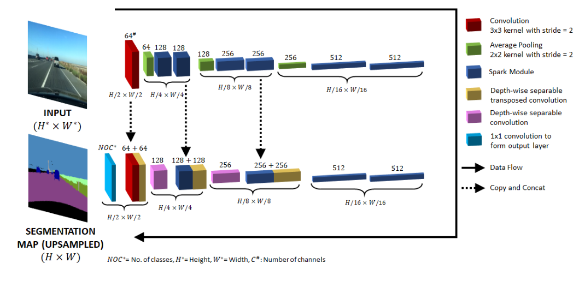
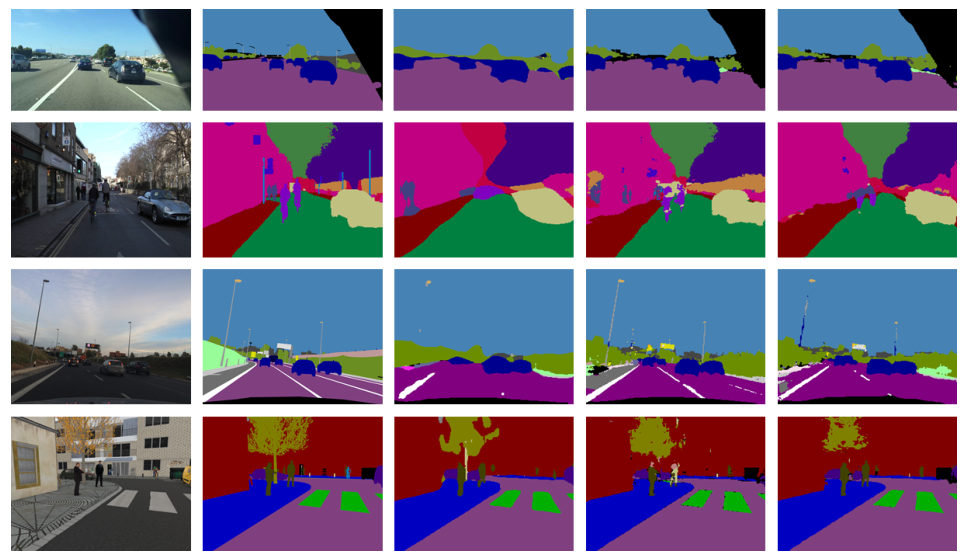

A small segmentation network that runs in under half a second on a CPU
A self-driving car has to know what every part of its camera image is: road, sky, building, pedestrian. This pixel-by-pixel labelling is called semantic segmentation. The best networks for it usually need expensive graphics cards, which keeps the technology out of cheap cars. We built SegFast, a much smaller network that still labels street scenes well and runs quickly on an ordinary processor.
The problem
Most segmentation networks are large. A network is a long chain of small mathematical filters, and each filter has numbers (parameters) that the computer learns during training. More parameters means more memory and more arithmetic for every image. Two older networks make a good yardstick: FCN, with about 134.5 million parameters, and SegNet, with about 29.5 million (Table 5).
Speed matters for safety too. A system that spots a danger but reacts late is not much help. So we wanted a balance: fast and small, without giving up much accuracy. We were thinking in particular of countries like India, where most vehicles are in the low-budget range.
The idea
We started from SqueezeNet, a network designed to be small. Its building block is the “fire module”. It first squeezes the data down to fewer channels (a channel is one layer of feature maps, a bit like one colour plane of an image). Then it expands the data again using a mix of tiny 1×1 filters and larger 3×3 filters.
We made that block even smaller. A normal 3×3 filter looks at all the channels at once. A depth-wise separable convolution splits the job in two. First, one flat filter works on each channel on its own. Then a 1×1 filter mixes the channels together. The result is similar, but it needs far fewer numbers. We swapped this into the fire module and called the result a “spark” module.
The second change is on the way back up. A segmentation network shrinks the image to understand it, then has to blow it up again to label each pixel. We built that upsampling part from depth-wise separable transposed convolutions, which is the same trick applied in reverse. The paper notes that this trick had normally been used only for ordinary convolutions.

How we tested it
We trained SegFast, FCN and SegNet on four driving datasets: BDD, CamVid, Synthia and Mapillary (Table 1). All images were resized to 224×224 pixels, and we did no data augmentation. We also trained SegFast-Basic, the same network with ordinary convolutions, to see what the depth-wise trick alone contributes. For timing we deliberately used only a CPU (an Intel Xeon with 16 threads), because the graphics card we had was too powerful to show any significant difference.
What we found
SegFast has 603,288 parameters. That is about 223 times fewer than FCN and about 49 times fewer than SegNet. The depth-wise trick alone cuts the parameter count by almost a factor of 5 compared with SegFast-Basic, which has 2,965,976. On one 224×224 image, SegFast needs about 703 MiB of GPU memory, against 1,515 MiB for SegNet and 3,447 MiB for FCN (Table 5).
Accuracy held up. In pixel accuracy, SegFast scored 83.48% on BDD and 93.58% on Synthia, the best of the networks we compared on both. SegNet did slightly better on CamVid (88.70% against 85.08%) and Mapillary (82.46% against 81.63%). SegFast beat FCN on every dataset (Table 2). The mean intersection over union, a stricter measure of how well predicted regions overlap the true ones, tells the same story (Table 3).

Results in more detail
The four datasets differ a lot (Table 1). CamVid has 12 classes and only 367 training images. BDD has 20 classes and 7,000 training images. Synthia has 13 classes and 10,786 training images. Mapillary has 66 classes and 18,000 training images. We trained every model for 200 epochs with the Adam optimiser, kept the version that did best on the validation images (early stopping), and report that score. Table 2 gives the pixel accuracy, the share of pixels that received the right label. SegFast-Basic is the control: the same network built with ordinary convolutions.
| Dataset | FCN | SegNet | SegFast-Basic | SegFast |
|---|---|---|---|---|
| BDD | 75.31 % | 82.79 % | 80.45 % | 83.48 % |
| CamVid | 74.22 % | 88.70 % | 86.31 % | 85.08 % |
| Mapillary | 79.62 % | 82.46 % | 82.10 % | 81.63 % |
| Synthia | 91.81 % | 92.05 % | 91.65 % | 93.58 % |
SegFast gives the highest pixel accuracy on BDD and Synthia. Against the basic variant, it came out ahead on those two datasets in both pixel accuracy and mean intersection over union. On CamVid it came out ahead of SegFast-Basic only on the intersection-over-union score (Table 2 and Table 3). Table 3 shows that second score, which compares the predicted region for each class with the true region, and so punishes sloppy borders more than pixel accuracy does.
| Dataset | FCN | SegNet | SegFast-Basic | SegFast |
|---|---|---|---|---|
| BDD | 0.3076 | 0.3475 | 0.3434 | 0.3576 |
| CamVid | 0.3342 | 0.5174 | 0.4431 | 0.5000 |
| Mapillary | 0.1910 | 0.2234 | 0.2206 | 0.2108 |
| Synthia | 0.5346 | 0.5430 | 0.5317 | 0.5910 |
The pattern matches Table 2: SegFast leads on BDD and Synthia, and SegNet leads on CamVid and Mapillary. Mapillary, the dataset with 66 classes, has the lowest scores for every network.
Speed is where SegFast pulls ahead. Table 4 lists the time for one forward pass (labelling one image, which is what happens at test time) and one backward pass (the learning step, which is what happens in training), both on the CPU. Each time is for a single sample image.
| Network | Forward pass | Backward pass |
|---|---|---|
| FCN | 3.385 | 5.230 |
| SegNet | 1.977 | 3.251 |
| SegFast-Basic | 0.419 | 1.336 |
| SegFast | 0.389 | 0.929 |
Both SegFast and SegFast-Basic label a sample in under half a second, and SegFast is the faster of the two, which shows that the depth-wise trick speeds the network up. On this basis we argued that the network could serve real-time applications even on low-end GPUs. We think SegFast is quicker than SegNet partly because it has fewer convolution blocks (four against five) and starts with a single strided convolution, where SegNet starts with two ordinary ones. For memory, SegFast-Basic needs 1,232 MiB for one 224×224 input, against 703 MiB for SegFast (Table 5). Figure 4 shows the outputs side by side: SegFast's boundaries are sharper than FCN's and close to SegNet's.
Discussion
We conclude that SegFast is much smaller and faster than SegNet and FCN while giving up little accuracy. It is best on BDD and Synthia, and its CamVid and Mapillary scores are comparable to SegNet's. Against FCN, it did better on every dataset.
It does not win everywhere, and we have a guess about why. CamVid has very few training images and Mapillary has 66 classes. Our experiments lead us to believe that the network performs best when the number of classes and the amount of training data are in healthy balance, and that it degrades with less data and more classes. The accuracy drops mostly because the network has far fewer neurons. To improve it, one would have to make it deeper and wider, and that would cost speed.
Another caveat concerns the timing. We measured it on a CPU because our graphics card was too powerful to show a significant difference. On the highly parallel hardware of a GPU the difference in time would be negligible. Networks were mainly trained and tested on the GPU, and the CPU was used only for the timing runs.
The aim was not to beat every record. It was to offer a method that can run on cheap hardware and so reach more people. In future we hope to apply the same compression to deeper networks and reach even better results.
Sources
The figures and tables listed here are taken from the paper cited at the top of this page; the numbers quoted in the text come from it too.
- Figures: Fig. 1, Fig. 4
- Tables: Table 1: size and number of classes of the four driving datasets; Table 2: pixel accuracy of each network on each dataset; Table 3: mean intersection over union of each network on each dataset; Table 4: forward and backward pass time on a CPU; Table 5: number of parameters and memory of each network
Acknowledgements
This work is sponsored by SERB (Government of India, order no. SB/S3/EECE/054/2016, dated 25/11/2016), and carried out at the Centre for Microprocessor Application for Training Education and Research, CSE Department, Jadavpur University.
Cite the paper
A Pal, S Jaiswal, Swarnendu Ghosh, N Das, M Nasipuri (2018). Segfast: A faster squeezenet based semantic image segmentation technique using depth-wise separable convolutions. 11th Indian Conference on Computer Vision, Graphics and Image Processing (ICVGIP), pp. 1–7 · ACM.
@inproceedings{pal2018segfast,
author = {Pal, A and Jaiswal, S and Ghosh, Swarnendu and Das, N and Nasipuri, M},
title = {Segfast: A faster squeezenet based semantic image segmentation technique using depth-wise separable convolutions},
booktitle = {11th Indian Conference on Computer Vision, Graphics and Image Processing (ICVGIP)},
pages = {1--7},
publisher = {ACM},
year = {2018},
doi = {10.1145/3293353.3293406}
}